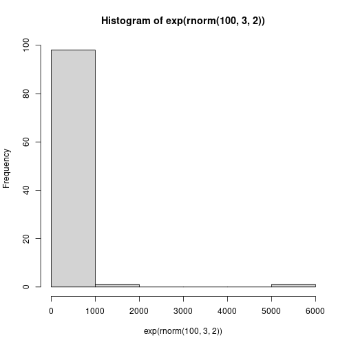

Playing with Bayes
From this paper.
These are some simulations that might be relevant to experiment-2-theory.md.
data {
int LENGTH;
vector[LENGTH] Y;
}
parameters {
real<lower=0> lambda;
}
model {
real alpha;
real beta;
alpha <- 1.0;
beta <- 1.0;
lambda ~ gamma(alpha, beta);
Y ~ exponential(lambda);
}
generated quantities {
real pred;
pred <- exponential_rng(lambda);
}
lambda <- 1
d <- rexp(500, lambda)
len <- length(d)
fit <- stan(file = 'stan-file.stan',
data = list(Y=d, LENGTH = len),
warmup = 750,
iter = 1500,
chains = 3)
##
## SAMPLING FOR MODEL 'stan-file' NOW (CHAIN 1).
## Chain 1:
## Chain 1: Gradient evaluation took 9e-06 seconds
## Chain 1: 1000 transitions using 10 leapfrog steps per transition would take 0.09 seconds.
## Chain 1: Adjust your expectations accordingly!
## Chain 1:
## Chain 1:
## Chain 1: Iteration: 1 / 1500 [ 0%] (Warmup)
## Chain 1: Iteration: 150 / 1500 [ 10%] (Warmup)
## Chain 1: Iteration: 300 / 1500 [ 20%] (Warmup)
## Chain 1: Iteration: 450 / 1500 [ 30%] (Warmup)
## Chain 1: Iteration: 600 / 1500 [ 40%] (Warmup)
## Chain 1: Iteration: 750 / 1500 [ 50%] (Warmup)
## Chain 1: Iteration: 751 / 1500 [ 50%] (Sampling)
## Chain 1: Iteration: 900 / 1500 [ 60%] (Sampling)
## Chain 1: Iteration: 1050 / 1500 [ 70%] (Sampling)
## Chain 1: Iteration: 1200 / 1500 [ 80%] (Sampling)
## Chain 1: Iteration: 1350 / 1500 [ 90%] (Sampling)
## Chain 1: Iteration: 1500 / 1500 [100%] (Sampling)
## Chain 1:
## Chain 1: Elapsed Time: 0.010471 seconds (Warm-up)
## Chain 1: 0.008533 seconds (Sampling)
## Chain 1: 0.019004 seconds (Total)
## Chain 1:
##
## SAMPLING FOR MODEL 'stan-file' NOW (CHAIN 2).
## Chain 2:
## Chain 2: Gradient evaluation took 6e-06 seconds
## Chain 2: 1000 transitions using 10 leapfrog steps per transition would take 0.06 seconds.
## Chain 2: Adjust your expectations accordingly!
## Chain 2:
## Chain 2:
## Chain 2: Iteration: 1 / 1500 [ 0%] (Warmup)
## Chain 2: Iteration: 150 / 1500 [ 10%] (Warmup)
## Chain 2: Iteration: 300 / 1500 [ 20%] (Warmup)
## Chain 2: Iteration: 450 / 1500 [ 30%] (Warmup)
## Chain 2: Iteration: 600 / 1500 [ 40%] (Warmup)
## Chain 2: Iteration: 750 / 1500 [ 50%] (Warmup)
## Chain 2: Iteration: 751 / 1500 [ 50%] (Sampling)
## Chain 2: Iteration: 900 / 1500 [ 60%] (Sampling)
## Chain 2: Iteration: 1050 / 1500 [ 70%] (Sampling)
## Chain 2: Iteration: 1200 / 1500 [ 80%] (Sampling)
## Chain 2: Iteration: 1350 / 1500 [ 90%] (Sampling)
## Chain 2: Iteration: 1500 / 1500 [100%] (Sampling)
## Chain 2:
## Chain 2: Elapsed Time: 0.010485 seconds (Warm-up)
## Chain 2: 0.010832 seconds (Sampling)
## Chain 2: 0.021317 seconds (Total)
## Chain 2:
##
## SAMPLING FOR MODEL 'stan-file' NOW (CHAIN 3).
## Chain 3:
## Chain 3: Gradient evaluation took 6e-06 seconds
## Chain 3: 1000 transitions using 10 leapfrog steps per transition would take 0.06 seconds.
## Chain 3: Adjust your expectations accordingly!
## Chain 3:
## Chain 3:
## Chain 3: Iteration: 1 / 1500 [ 0%] (Warmup)
## Chain 3: Iteration: 150 / 1500 [ 10%] (Warmup)
## Chain 3: Iteration: 300 / 1500 [ 20%] (Warmup)
## Chain 3: Iteration: 450 / 1500 [ 30%] (Warmup)
## Chain 3: Iteration: 600 / 1500 [ 40%] (Warmup)
## Chain 3: Iteration: 750 / 1500 [ 50%] (Warmup)
## Chain 3: Iteration: 751 / 1500 [ 50%] (Sampling)
## Chain 3: Iteration: 900 / 1500 [ 60%] (Sampling)
## Chain 3: Iteration: 1050 / 1500 [ 70%] (Sampling)
## Chain 3: Iteration: 1200 / 1500 [ 80%] (Sampling)
## Chain 3: Iteration: 1350 / 1500 [ 90%] (Sampling)
## Chain 3: Iteration: 1500 / 1500 [100%] (Sampling)
## Chain 3:
## Chain 3: Elapsed Time: 0.010339 seconds (Warm-up)
## Chain 3: 0.009256 seconds (Sampling)
## Chain 3: 0.019595 seconds (Total)
## Chain 3:
print(fit)
## Inference for Stan model: stan-file.
## 3 chains, each with iter=1500; warmup=750; thin=1;
## post-warmup draws per chain=750, total post-warmup draws=2250.
##
## mean se_mean sd 2.5% 25% 50% 75% 97.5% n_eff Rhat
## lambda 1.09 0.00 0.05 1.00 1.06 1.09 1.13 1.19 924 1.01
## pred 0.88 0.02 0.89 0.02 0.25 0.62 1.23 3.28 2034 1.00
## lp__ -457.30 0.02 0.68 -459.31 -457.46 -457.04 -456.87 -456.81 1106 1.00
##
## Samples were drawn using NUTS(diag_e) at Sat Dec 24 21:40:02 2022.
## For each parameter, n_eff is a crude measure of effective sample size,
## and Rhat is the potential scale reduction factor on split chains (at
## convergence, Rhat=1).
mcmc_chain <- as.data.frame(fit)
mcmc_chain$iteration <- 1:(nrow(mcmc_chain))
p1 <- mcmc_chain %>%
ggplot(aes(x = iteration, y = lambda)) +
geom_line(color = 'steelblue') +
ylim(0,1.5) +
labs(
x = 'Iteration',
y = TeX(r'($\lambda$)')
) +
theme_bw()
p2 <- mcmc_chain %>%
ggplot(aes(x = lambda)) +
geom_density(fill = 'steelblue', alpha = .6) +
labs(
x = TeX(r'($\lambda$)')
) +
theme_bw()
grid.arrange(p1, p2, nrow = 1)

Truly astonishing.
x